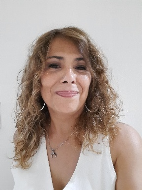

En mis trece años como asistente de la carrera de Traductorado Público en Idioma Inglés de la Universidad Nacional de Lanús, aprendí que la vida universitaria está hecha tanto de procedimientos como de personas. Entre grillas, consultas, programas y actividades académicas, descubrí que mi tarea no se limita solo a sostener la estructura administrativa: también implica acompañar, escuchar y construir vínculos que fortalecen la experiencia universitaria.
La asistencia a la carrera es un punto de encuentro. Desde esta función, participo en la organización y seguimiento de procesos que permiten que la dinámica académica funcione de la mejor manera…o, al menos eso busco siempre. Entre mis principales responsabilidades se encuentra la de orientar a los estudiantes en su recorrido académico, ya sea en sus inscripciones, consultas sobre correlativas, legalización de programas y todas y cada una de esas dudas que parecen pequeñas, pero que hacen la diferencia en la vida universitaria de quienes la transitan. No nos olvidemos que la universidad es un desafío y saber que alguien está ahí para ayudarte te cambia el camino. También acompaño a los docentes en sus necesidades administrativas y colaboro en la planificación de actividades académicas, encuentros, jornadas y proyectos que enriquecen la formación de los futuros traductores. Estas tareas, aunque muchas veces permanecen invisibles, forman parte del andamiaje que sostiene la calidad académica de la carrera.
Con los años aprendí que gran parte de mi trabajo consiste en ser un canal de escucha, contención y apoyo, ofreciendo claridad cuando hay dudas, orientación en momentos de confusión y contención cuando el trayecto universitario se vuelve desafiante. Muchas veces lo que un estudiante necesita es simplemente un espacio donde lo escuchen o una guía que vuelva posible lo que parecía complejo. Aprendí que cada estudiante tiene una historia, un ritmo y un objetivo distinto. Algunos llegan con la vocación clara desde el primer día; otros la van descubriendo a lo largo del camino. Muchos trabajan, tienen familia, viajan largas horas o estudian después de una jornada laboral ardua. Verlos avanzar, rendir, aprobar, recibirse y cruzármelos por ahí, y que me reconozcan, es, sin duda, uno de los mayores privilegios de mi rol. Por otra parte, el trabajo con los docentes representa otro pilar fundamental de mi tarea. A lo largo de estos años tuve la oportunidad de aprender de su profesionalismo, su dedicación y su compromiso en formar traductores. La colaboración cotidiana, el diálogo y la confianza mutua permiten que cada año académico se desarrolle con eficiencia, alegría y compromiso. Desde mi rol, busco siempre facilitar y agilizar procesos para que tanto docentes como estudiantes puedan focalizarse en aquello que constituye el corazón de la universidad: la enseñanza y el aprendizaje.
Todos estos años en la carrera no solo me muestran cuánto he crecido en lo profesional y personal, también me han enseñado que las instituciones se sostienen gracias al compromiso cotidiano de quienes las habitamos. Estoy orgullosa de acompañar a una carrera que crece, se transforma y mantiene su sello: la excelencia académica y el profundo respeto por los estudiantes.
Hoy, poder escribir estas palabras es agradecer a quienes confiaron en mi, a quienes me enseñaron, a quienes me hicieron preguntas que me llevaron a aprender más y a quienes me permitieron ser parte de sus trayectorias.
Porque ser asistente de carrera no es solo un trabajo: es un modo de estar con otros. Y eso, para mí, es el corazón de la universidad pública, la misma que nos regala la posibilidad de transformar vidas a través del acceso al conocimiento. Contribuir a ese proceso desde mi lugar es una tarea que abrazo con orgullo, responsabilidad y sentido de pertenencia.
¡Gracias a todos: a la dirección, los docentes y los estudiantes de esta bellísima carrera!
Sobre la autora

Sandra Villafañe es asistente de la carrera de Traductorado Público en Idioma Inglés de la Universidad Nacional de Lanús, rol que desempeña desde hace 13 años. Es abogada, graduada en la Universidad Nacional de Lomas de Zamora, formación que le permitió desde hace dos años, desempeñarse como ayudante de la cátedra de Introducción al Derecho y Constitucionalismo en el Traductorado Público. Actualmente se encuentra en la etapa final de la Especialización en China Contemporánea, dictada por la UNLa, mientras proyecta nuevas líneas de estudio y desarrollo profesional para el próximo año.